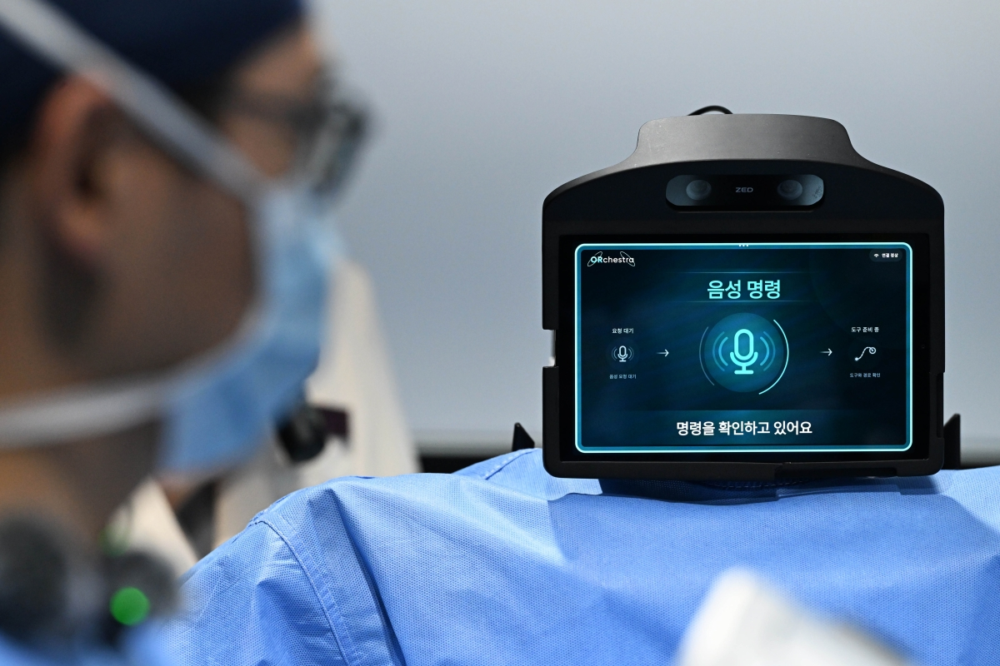
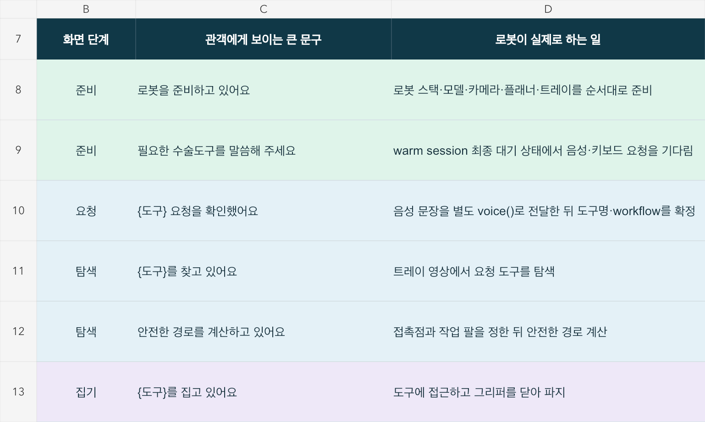
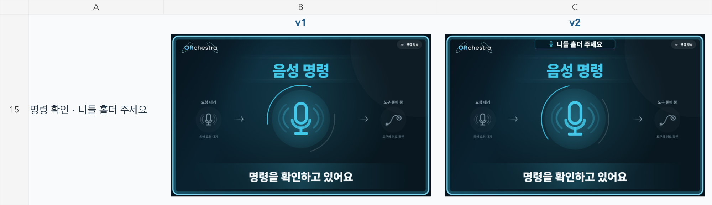
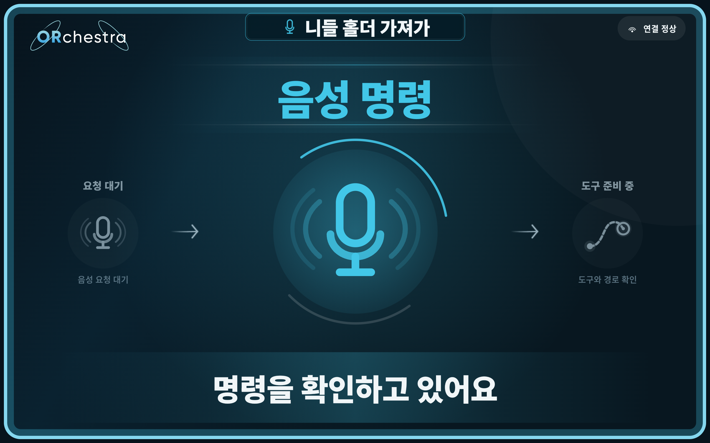
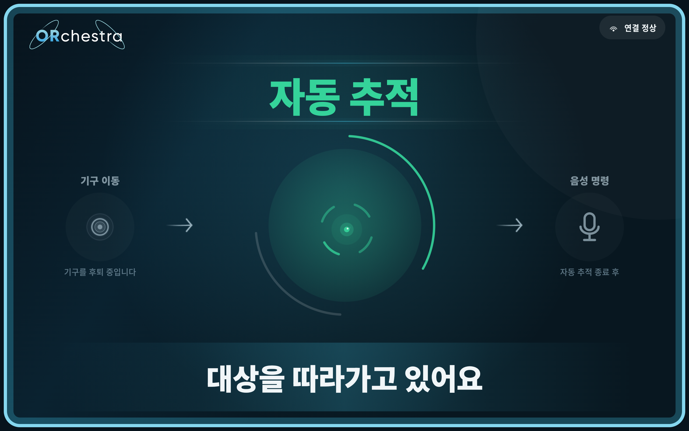
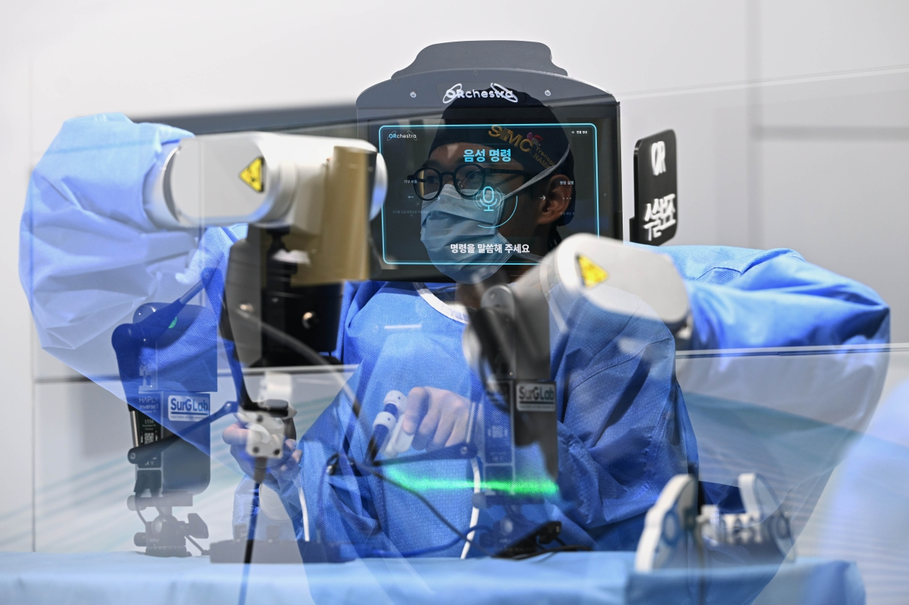

프로젝트 소개
로봇 헤드에 상태 화면 장착
한국형 ARPA-H 수술보조로봇 과제에서, 로봇이 지금 어떤 작업을 하고 있는지 보여주는 Orchestra Display를 제작했습니다. 로봇·운용 프로그램에서 받은 상태와 인식된 음성 명령을 로봇 헤드의 태블릿에 표시합니다.
소프트웨어 구조 · 로봇 연동
로봇 제어와 화면 표시를 분리
로봇의 동작 처리는 기존 프로그램에 두고, 상태를 받는 API와 디스플레이 앱을 별도로 구현했습니다. 같은 네트워크에서 상태 상수와 필요한 표시 정보만 전달하도록 구성했습니다.
로봇 PC
로봇 헤드 · Android 태블릿
동작이 바뀌는 지점에 상태 호출 추가
처음에 태블릿 연결 주소와 로봇 ID를 설정합니다. 이후에는 기존 액션의 전환 지점에서 전송 함수를 호출합니다. 로봇 개발자가 화면이나 통신 처리를 직접 작성하지 않아도 되도록 연동 범위를 줄였습니다.
- 기구 집기 시작집기 동작 직전
display.state(RobotState.PICKING_TOOL) - 전달 위치로 이동집기 성공 후 · 이동 직전
display.state(RobotState.MOVING_TO_HANDOVER) - 기구 전달 완료로봇이 전달 성공을 확인한 뒤
display.state(RobotState.COMPLETED)
스코피스트에는 기존 제어기의 상태를 읽어 화면 상태로 바꾸는 observer 방식도 사용했습니다. 로봇별 액션에 맞춰 연결하되, 디스플레이 앱이 로봇의 동작 로직을 직접 참조하지 않도록 했습니다.
네트워크 전송은 별도 작업으로 처리
상태 호출은 이벤트를 큐에 넣고 반환합니다. 실제 HTTP 전송과 재시도는 백그라운드 작업이 맡아, 로봇 프로그램이 전송 완료를 기다리지 않도록 했습니다.
- 상태 호출
state(…) - 큐에 등록전송할 이벤트
- 호출 반환기존 로직 계속
- 전송 작업실패 시 재시도
- 태블릿 API상태 수신
- 화면 갱신문구 · 아이콘
로봇 없이도 연동과 화면을 점검
기구 전달·스코피스트 연동 모듈에는 PC 수신 서버를 함께 준비했습니다. 같은 상태 호출을 PC로 보내 전송 기록을 확인하고, 연결 대상을 태블릿으로 바꿔 실제 화면을 점검할 수 있도록 했습니다.
state(…)연결 주소 설정- 로봇 쪽 수정 범위
- 연결 설정과 상태 전송 호출에 집중합니다. 동작·완료 판단은 기존 프로그램이 맡습니다.
- 화면 수정의 범위
- 상태 정의를 유지하면 문구, 아이콘, 전환 연출을 디스플레이 앱 안에서 수정할 수 있습니다.
- 함께 맞추는 기준
- 상태 이름과 호출 시점입니다. 새 상태를 추가할 때는 로봇과 디스플레이 앱의 정의를 함께 맞춥니다.
로봇별 디스플레이
Orchestra Display 앱 구성
기구 전달, 스코피스트, 텔레오퍼레이팅용 디스플레이 앱을 각각 제작했습니다. 로봇마다 필요한 상태와 안내 문구를 따로 정의해, 각 작업에 맞는 화면을 구성했습니다.
-
기구 전달 로봇탐색 · 집기 · 전달 · 회수DISPLAY 01기구 전달현재 동작 · 인식 문장
-
스코피스트기구 이동 · 자동 추적 · 복귀DISPLAY 02스코피스트이동·추적 상태 · 음성 안내
-
원격 조종 시스템연결 · 조종 세션 · 오류DISPLAY 03텔레오퍼레이팅연결 상태 · 원격 조종 단계
2026.08–09 · 상태·문구 설계
로봇 동작을 화면의 상태와 문구로 정리
로봇 소스를 분석해 도구 탐색·집기·전달·회수와 기구 이동·추적 동작을 조사하고, 각 단계에 필요한 상태와 안내 문구를 정의했습니다.


사용자가 현재 동작을 바로 알아볼 수 있도록 문구를 줄이고 명확한 아이콘을 배치했습니다. 상태별 화면을 비교하며, 동작이 빠르게 바뀔 때도 읽기 쉽고 자연스럽게 이어지도록 수정했습니다.


화면 전체가 깜박이지 않도록 배경과 프레임은 유지하고, 제목·아이콘·안내 문구가 같은 위치에서 부드럽게 전환되도록 보완했습니다.
2026.09.12 · Display 1 v0.3.15
기구 전달 상태와 인식 명령
도구 요청, 준비, 전달, 회수, 복귀를 19개 상태로 표시합니다. 인식된 음성 문장은 상단 카드에 남기고, 문장 길이에 맞춰 글자를 조절했습니다. 카드 높이와 글자 기준선은 고정했습니다.


2026.09.14 · Display 2 v0.38.0
스코피스트 상태 표시와 전환 속도 개선
기구 이동·자동 추적·준비 위치 복귀를 표시합니다. 음성 입력이 들어와도 진행 중인 이동·추적 상태를 가리지 않도록 우선순위를 정했습니다.
136초 촬영본에서 두 화면의 상태 전환을 비교했습니다. 앱 내부의 최대 500개 DB 재조회와 새 화면 진입 전 70–80ms 대기를 제거했습니다. 완료 신호를 받았을 때만 완료 화면으로 전환하도록 했습니다.


Display 3 v0.5.6
텔레오퍼레이팅 상태 화면
연결 대기, 연결 중, 텔레오퍼레이션, 세션 종료, 연결 오류를 표시합니다. 로봇 PC의 Python 모듈이 상태와 연결 유지 신호를 보내면, Lenovo Y700의 앱이 해당 화면을 표시합니다.
제작 결과
| 앱 | APK 버전 | 검증 결과 |
|---|---|---|
| 기구 전달 | v0.3.15 | 단위 테스트 47개 통과 |
| 스코피스트 | v0.38.0 | 단위 테스트 65개 통과 |
| 텔레오퍼레이팅 | v0.5.6 | Lenovo Y700 상태 전환 확인 |
각 앱의 디버그 APK를 생성하고, 로봇 연동용 Python 모듈과 API 사용 가이드를 함께 준비했습니다.
2026.09.16 · 현장 시연
로봇에 장착된 디스플레이


참고 자료
- 기구 전달·스코피스트 로봇 연동 가이드
- 로봇 상태·안내 문구 정의표와 화면 비교
- 기구 전달 v0.3.15 개발·검증 기록 · 2026.09.12
- 스코피스트 v0.38.0 개발·검증 기록 · 2026.09.14
- 텔레오퍼레이팅 v0.5.6 사용 가이드
- 수술보조로봇 시연 보도 · 서울신문 · 2026.09.17